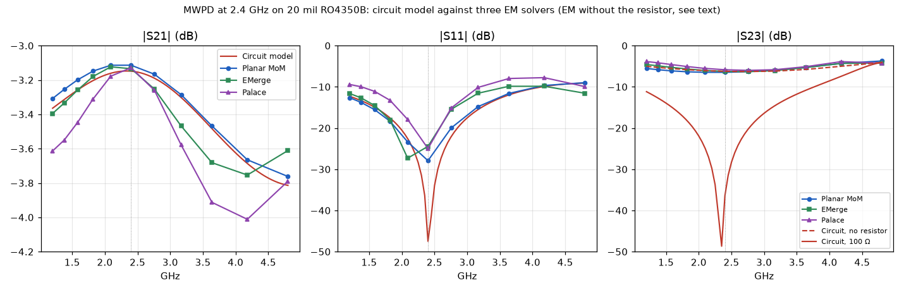

Dividers and Couplers
A 2.4 GHz Wilkinson divider placed as one part from its specs on 20 mil RO4350B, laid out by Update Layout with its 0402 isolation resistor across the ring, and solved by Planar MoM, EMerge and Palace against its circuit model.
File ▸ New ▸ Examples ▸ Dividers and Couplers copies this workspace to a folder you choose and opens it on this README. Every example is listed in Example Workspaces.
RF dividers and couplers placed as single parts, each stated by its specifications and drawn from the same plan its circuit model simulates. One cell per component. Today the workspace holds the Wilkinson divider: an MWPD at 2.4 GHz on a 20 mil RO4350B board, laid out by Update Layout from Schematic and solved on the Planar MoM solver, EMerge and Palace against its circuit model.

The cell
| Cell | Views | What it is |
|---|---|---|
| Wilkinson | schematic, layout, EM setup, 3D view | The test bench and the board: a 5 mm input line, the MWPD, a 100 Ω resistor with an 0402 land pattern on R2-R3, and each output bending away through a 90° MCURVE and a 5 mm line to its port |
How it was built
- Schematic.
WPD1is an MWPD withZ050 Ω,F2.4 GHz andGap1.35 mm, the 0402's pin span. Nothing else is typed: select it, and its parameters show what the board makes of those specs — a 1.05768 mm port width, 0.548 mm arms of 70.7 Ω, a quarter wave of 18.903 mm and a ring radius of 5.743 mm.R1is 100 Ω, 2·Z0, withFootprintsmt:0402, dropped on the symbol's R2-R3 pins. The lines use the VARW50, set to the readout's port width exactly, so they meet the divider's pins with no step in the copper. - Why the outputs bend away. The divider's two output pins are only Gap + W apart, 2.4 mm centre to centre. The Planar solver calibrates each port on an isolated line and refuses a port with another port's metal closer than five substrate heights, so each output turns 90° away and runs 5 mm before its port. A board would route them apart anyway.
- Design ▸ Update Layout from Schematic. It places the ring, lays the 0402 across the ring's gap, chains the lines
on, puts the three ports at the line ends and pours the ground plane on Bottom Copper. LVS matches
(
circuitrf lvs Wilkinson). - EM setups.
Wilkinson/em/Wilkinson Planar.cemis the Planar setup. Design ▸ New 3D View from Layout made the 3D view, which has two setups, Palace and EMerge. All three nameR1as a component port.
Run it
| Step | What | Time here |
|---|---|---|
| 1 | Simulate the schematic | under a second |
| 2 | Simulate the EM setup Wilkinson Planar | about 6½ min |
| 3 | Open the 3D view, run setup EMerge | about 1 min |
| 4 | Run setup Palace in the same view | about 1½ min |
Times are from a shared Linux server, 8 threads for Planar and EMerge, and 8 Palace processes on one compute node. The
first 3D run offers to install its solver. The three Touchstone files the runs write are in results/, so the comparison
below can be read without running anything.
The resistor and the EM runs
Each EM run leaves the resistor out, and says so. The ring joins R2 to R3, so the 0402's two pads lie on one piece
of copper. A component port is built only across pads that are not already joined, so R1 is left out of every run
with a warning, and each result is a three-port: the divider without its resistor. That does not spoil the comparison:
- Driven from port 1, the resistor carries no current. The two arms are mirror images, so R2 and R3 sit at the same voltage. |S11|, |S21| and |S31| are the same with and without the resistor; the circuit model gives identical numbers both ways.
- The isolation, |S23|, does depend on it. The EM results are compared with the circuit model with the resistor removed, which is the same structure. The designed isolation is the circuit model's with 100 Ω.
What you will see

At 2.4 GHz:
| Circuit, 100 Ω | Circuit, no resistor | Planar MoM | EMerge | Palace | |
|---|---|---|---|---|---|
| |S11| | −47.5 dB | −47.5 dB | −27.9 dB | −24.5 dB | −25.0 dB |
| |S21| | −3.149 dB | −3.149 dB | −3.114 dB | −3.134 dB | −3.128 dB |
| |S31| | −3.149 dB | −3.149 dB | −3.114 dB | −3.133 dB | −3.210 dB |
| |S23| | −36.4 dB | −6.2 dB | −6.5 dB | −6.3 dB | −5.9 dB |
Across 1.2 to 4.8 GHz, eleven points from F/2 to 2F:
| Planar MoM | EMerge | Palace | |
|---|---|---|---|
| Largest difference in |S21| from the circuit model | 0.06 dB | 0.20 dB | 0.43 dB |
| Largest difference in |S31| from the circuit model | 0.06 dB | 0.31 dB | 0.54 dB |
| Largest difference in |S23| from the circuit model without the resistor | 0.7 dB | 0.7 dB | 1.2 dB |
| Worst |S11| in the band (circuit model −9.1 dB) | −9.0 dB | −9.9 dB | −7.8 dB |
| Deepest |S11| of the eleven points | 2.40 GHz | 2.09 GHz | 2.40 GHz |
All three solvers put |S21| within 0.04 dB of the model at 2.4 GHz. The model's |S21| of −3.149 dB is the ideal −3.01 dB plus about 0.14 dB of conductor and dielectric loss in the arms and the 10 mm of line. Planar follows the model within 0.06 dB across the whole band. Its |S11| null is where the model's is, but 28 dB deep rather than 47 dB: a deep null is a small difference of two large numbers, and a few hundredths of a dB of arm loss or junction reactance moves it.
The 3D runs read further from the model away from 2.4 GHz, Palace most. Both use coarse meshes (below), and in 3D each port is a lumped sheet from the line down to the ground plane, 20 mil tall, whose own inductance stays in the answer. Palace's |S21| and |S31| also differ from each other by up to 0.1 dB on a layout that is symmetric: its draft mesh is not. Its |S11| is up to 3 dB worse than the model's at the band edges.
The model warns, and it should. The run's Messages say that MTEE's junction formulas are calibrated at εr 9.9 and this board is 3.66, that the tee's branch is a little wider than their W/h range, and that the ring's bend radius, 10.5 widths, is past the 3 to 7 widths MCURVE's length rule is stated for. At 2.4 GHz none of this moves |S21| by more than the solvers disagree with one another.
Run times and meshes
| Mesh | Unknowns | Wall time | Peak memory | |
|---|---|---|---|---|
| Circuit model | — | — | under a second | — |
| Planar MoM | 3,036 cells | 5,466 | 6 min 24 s | 1.6 GB |
| EMerge | 11,033 tetrahedra | 79,972 | 58 s | 1.7 GB |
| Palace | 54,807 tetrahedra | 72,034 | 1 min 24 s | 2.0 GB |
What was traded for speed
- Planar: edge mesh off, and
"LocalGrid": false. The local grid sizes its cells from the sweep's top frequency, so with it on the mesh, and the answer, would change if the band changed. - EMerge: the Draft preset, no adaptive mesh passes, and its adaptive frequency sweep.
- Palace: the Draft preset and
AdaptiveMaxIterations0 — one solve on the initial mesh, no refinement — with its adaptive frequency sweep, built from 4 full solves. - The 3D air box is 5 mm on the sides and the top, about ten substrate heights.
- Eleven log-spaced points from 1.2 to 4.8 GHz, F·2^(k/5) for k = −5 … 5, so 2.4 GHz is one of them.
Things to try
- Change
ForZ0and simulate: the ring is redrawn and re-solved from the new specs. Update Layout redraws the layout; re-run the EM setups to compare again. - Remove
R1, or change it, and watch |S23| and |S22| while |S21| and |S11| stay put.